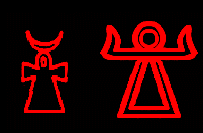
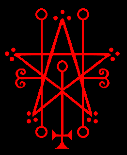
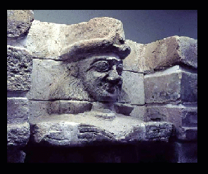
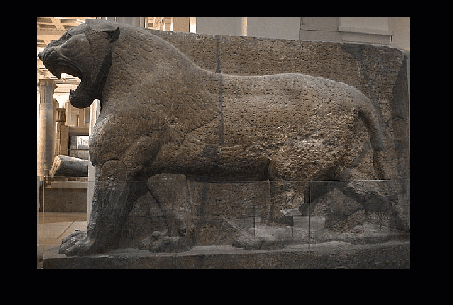
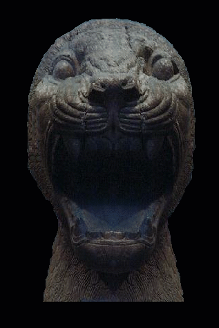
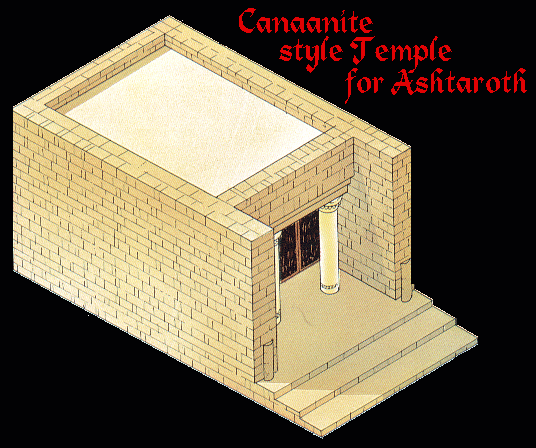
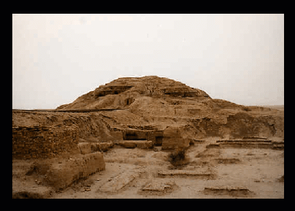
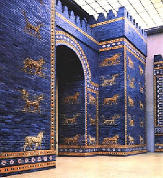
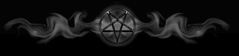

{kind=link}
{kind=link}

Kanaánci ji znali jako ASTARTE, Sumerové ji znali jako INANNU, Babyloňanům byla známá jako ISHTAR, Asyřanům a Akkadům jako ASHTART, ASHTORETH, ASHERAH a ASTORETH, Egypťanům jako ISIS, ASHET a ASET, Féničanům jako TANIT-ASHTART a ASHTAROTH. Její ugaritské jméno bylo ANAT.
Astaroth je velmi starobylá bohyně. Byla s lidstvem stejně jako Satan a Belzebub, od počátku. Astaroth je Satanovou dcerou. Až donedávna [do října 2016] nechtěla, aby se to vědělo. Vždy byla velmi oblíbená, milovaná a zbožňovaná v místech, kde byla uctívaná. Protože s námi byla od počátku, byla známa pod několika různými jmény, protože byla hlavní bohyní v mnoha různých oblastech a kulturách. Byla známa jako bohyně plodnosti, lásky a války.
„Astaroth se zjevuje s velmi obrovskou aurou. Má velmi jemnou modrou barvu, ne jemnou ve smyslu síly, ale jemnou ve smyslu krásy.
Astarotina energie je povzbuzující a uklidňující; je skutečně krásná v každém ohledu. Má dlouhé zlaté vlasy; je poměrně vysoká a je
obklopena zářivou bílozlatou barvou. Nejvíce ji cítím, když vytvářím
spojení během invokace čtyř vládnoucích božských sil Duatu.
Je tu vždy, aby mě vedla, když se cítím ztracený nebo se trápím. Její
hlas je velmi silný, Astaroth je velmi starostlivá, ale vyjadřuje se jasně a stručná, když mě vede. Moc mi pomáhá a já jsem jí za všechno vděčný.“
– Vovim Baghie
 dodvozené od egyptského Ankhu |  |  |
Trojice teček na vrcholech hvězdy jejího sigilu jsou mimořádně starobylé a označují její vysokou duchovní hodnost. Její sigil také znázorňuje důležité body lidské duše, jak je patrné z Venušina glyfu s obráceným křížem symbolizujícím veledůležitou sluneční čakru a pilířů duše na každé straně.
Jako sumerská bohyně „Inanna“ byla známá jako mocná bojovnice a jejím posvátným zvířetem byl lev. Níže jsou fotografie lvů, kteří střežili její chrám v Nimrudu.
|  |  |
|  |  |
Jejím posvátným městem byl Uruk, jedno z nejstarších sumerských měst, kde měla svůj chrám; na fotografii vpravo dole jsou jeho ruiny. Pod její vládou Sumerové a jejich komunity prosperovali a vzkvétali.
Svatyně a chrámy měla v mnoha městech starověkého Blízkého východu.
Její sumerský titul „Královna nebes“ byl ukraden křesťany a použit pro jejich smyšlenou „Pannu Marii“, která je podvodnicí.
Astaroth byla také babylonskou bohyní Ištar. Babylonské spisy ji nazývali „světlem světa“, „Bohyní Bohyň“ a „dárkyní síly“.
|  | „Ištařina brána“, postavená přibližně 575 let př. n. l., byla hlavním vstupem do města Babylonu. Byla osmou z osmi bran vnitřního města. Babylonský král Nabukadnezar II. zasvětil bránu Ištar. Byla jednou z nejpůsobivějších památek na starověkém Blízkém východě. Ištařina brána byla vyzdobena draky, býky a lvy. Spolu s Ea [Satanem] a Enlilem [Belzebubem] se ocitla v grimoárech, když židovství/křesťanství přišlo na scénu jako jeden z nejvyšších korunovaných pekelných princů. Tito tři byli nejoblíbenějšími a nejznámějšími bohy na Blízkém východě. Jejich pověst byla zničena; byli krutě pomlouváni, lidé se vůči nim rouhali a byli démonizováni; označováni za „zlé“. |
„Ačkoli je Sidon respektován, nelze zapomenout, že jeho
bohyní byla Ashtart, jméno, které izraelský písař napsal s pěti souhláskami 'strt', a vokalizoval je samohláskami
známého hebrejské slova pro „hanbu“, čímž jméno sidonské bohyně v bastardní podobu Astoreth.“
–Úryvek z "Recovering Sarepta, A Phoenician City od Jamese B. Pritcharda, 1978
„V různých způsobech hláskování jména Astarte se nachází Tel Amara písmena. Hebrejské Astoreth vzniklo, když rabínská škola tzv. Massoretů v šestém století rozhodla přijmout konvenční systém, který měl kompenzovat nedostatek samohlásek v psané hebrejštině, a zároveň vložit do jmen cizích božstev samohlásky ze slova "boshet", což znamená ohavnost.“
-Úryvek z "Who's Who Non-Classical Mythology od Egertona Sykese, 1993
Nahoře jsou pozůstatky chrámu Isis, původně na ostrově Philae, museli být přemístěny během výstavby Asuánské přehrady na ostrov Agilqiyya [nahoře], aby byly uchráněny před zaplavením. |
Astarot pravdivě odpovídá na otázky týkající se minulosti, přítomnosti a budoucnosti. Odhaluje všechna tajemství a je vynikajícím učitelem svobodných věd. Způsobuje, že člověk má prorocké sny a/nebo vize o budoucnosti a dává nahlédnout do neznáma. Radí také lidem, kteří jsou blízcí Satanovi a aktivně pro něj pracují. Získává přátelství těch, kdo jsou u moci, a představuje přepych a pohodlí.
Velikonoce [původně známé jako "Ashtar"] jí křesťané ukradli.
Astaroth je velmi krásná a má světlé blond vlasy. Ačkoli je vysoká, je jemně stavěná. Astarothiny barvy jsou červená a modrá. Někdy se objevuje s bílými křídly s červenými a modrými pruhy.
Často mě a ostatní duchovní JoS navštěvuje sama od sebe a je nám přítelkyní a průvodcem.
– Velekněžka Maxine
SIGIL
OBRÁZEK
Umělecké dílo vytvořil Marcos Macias
